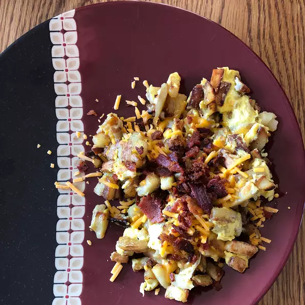

Potato Skillet

Description
My son loves this recipe even though he doesn't care much for breakfast food..
Ingredients
- 4 slices bacon
- 2 peeled and diced potatoes
- ⅛ teaspoon garlic salt
- ⅛ teaspoon seasoning salt
- ⅛ teaspoon black pepper
- 3 eggs, beaten
- ¼ cup shredded Cheddar cheese
Steps
- Place bacon in a large, deep skillet. Cook over medium-high heat until evenly brown. Remove bacon slices, reserving grease. Crumble bacon and set aside.
- Add potatoes to bacon grease and season with garlic salt, seasoned salt and black pepper. Cook until potatoes are soft.
- When potatoes are tender, add crumbled bacon. Pour eggs over potatoes and cook until firm. Spread with cheese and cover with lid until melted.